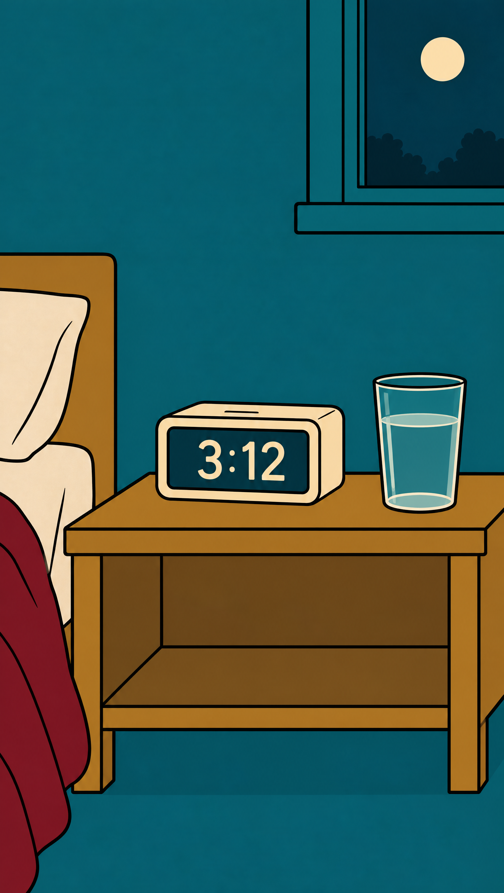
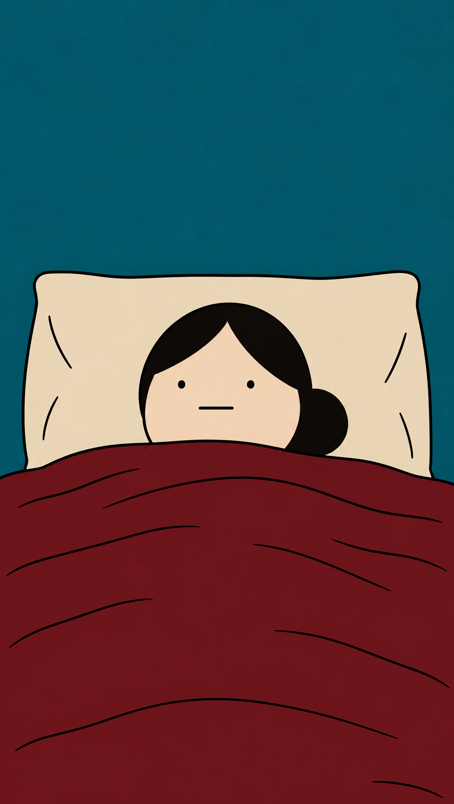
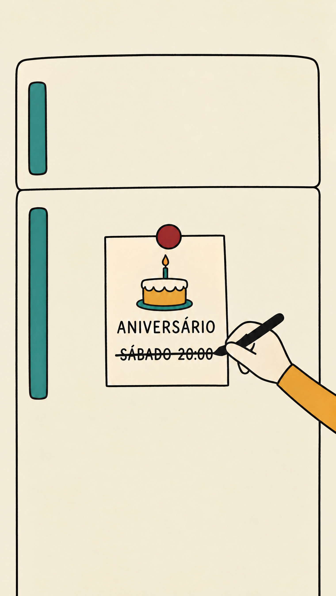
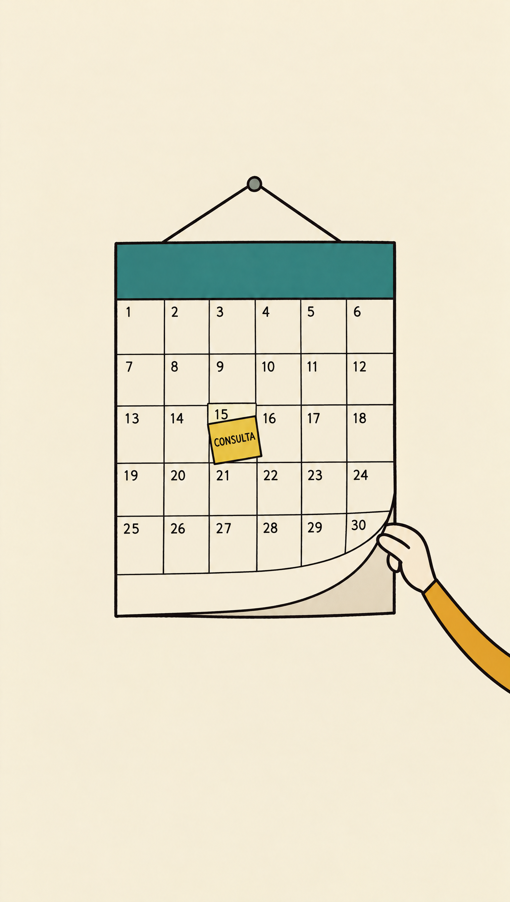
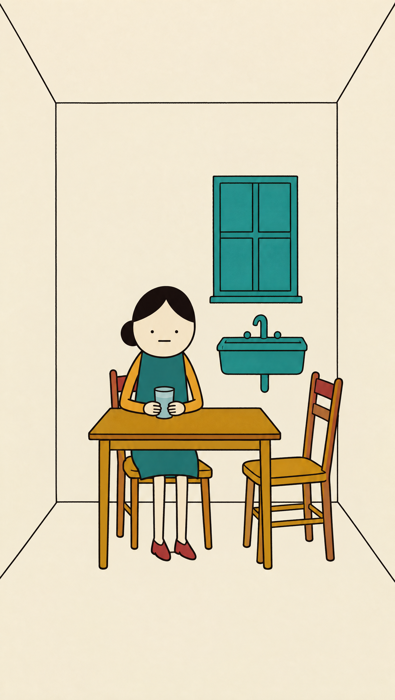
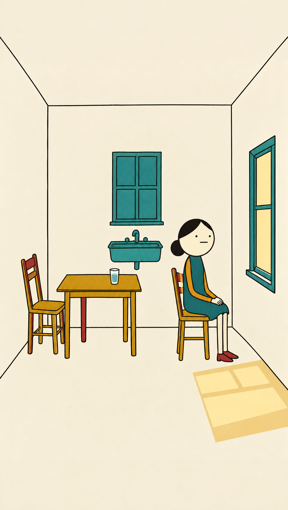
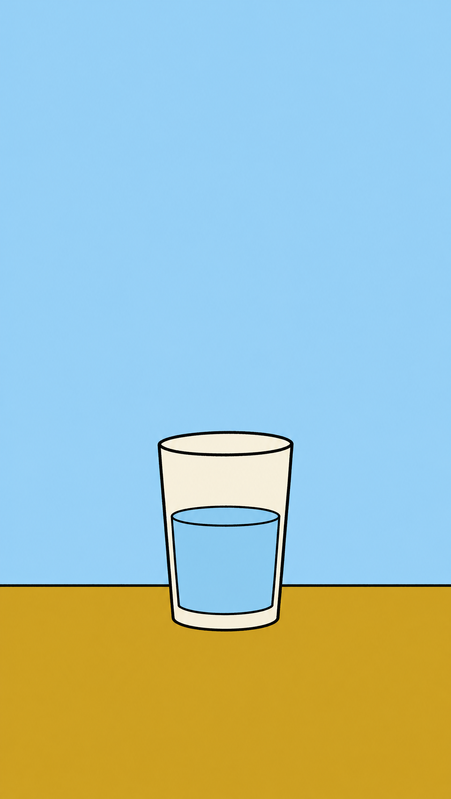

@DRFABIOSCHMIDT
SEM AJUDA,QUEM CUIDA DOBORDERLINE PERDENESTA ORDEM.
CONSULTA ADIADA
1
2
3
MANDA PRA QUEMCUIDA DE TODO MUNDOE NÃO MARCACONSULTA PRA SI.
O que acontece
com quem cuida
sozinho de alguém
com borderline?
Primeiro o sono,
fica acordada
esperando o barulho
do carro.
Depois os amigos,
para de sair
pra não deixar
a pessoa sozinha.
Por último,
a própria saúde,
a consulta dela
adiada de novo.
O que mais dói
não é cansar,
é achar que
cansar é amar
pouco.
Cuidar de você
não é abandonar
ninguém,
família também pode
ter acompanhamento.
Manda pra quem
cuida de todo
mundo e não
marca consulta pra si.